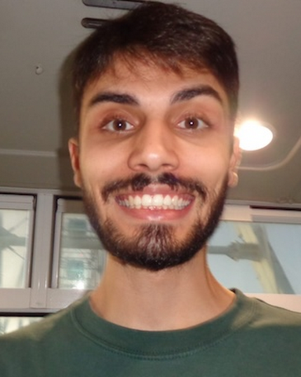

Rodrigo Nahid
Tech Lead at Automate Army — Software development, AI products and team leadership. MCP integrations, LLM features and accessible interfaces.
Foz do Iguaçu, PR, Brazil · Contact info
What I do
I build web products end to end — from accessible front-ends in React and Next.js to the AI layer on top: MCP integrations, LLM features and agent workflows that reach production.
Web Design
AI Product
Cloud & Tooling
02 / Selected work
Projects
03 / Experience
Experience
Since 2021, still counting
days building products that ship.
From painting screens with CSS to shipping AI-powered products — a path through front-end and engineering.
Now
May 2025 · Present
State College, PA · USA
Automate Army
Tech Lead
Team management & hands-on developmentLeading the technical team while staying hands-on: architecture decisions, code reviews and team management, plus building the product itself — AI-powered applications shipped to production.
2022
May 2022 · Apr 2025
Boca Raton, FL · Remote
The SilverLogic
Software Engineer
Full-stack development and maintenance of client applications: React and TypeScript on the front, Django APIs on the back, Docker for containerized deploys. Active in code reviews, sprint planning and architecture decisions for scalable, high-performance products.
2021
Feb 2021 · Apr 2022
Volta Redonda, RJ · Brazil
Seox · Agência Digital
Front-end Developer
Started with WordPress theme development — Sass and vanilla JavaScript. Rode the agency’s modernization into the headless model: specialized in React, building sites, e-commerce, blogs and portals on Next.js for performance and SEO.
04 / Contact
Let’s talk
- GitHub
- github.com/rodrigonahid
- Based in
- Foz do Iguaçu, PR
local time - Status
- Available for new projects